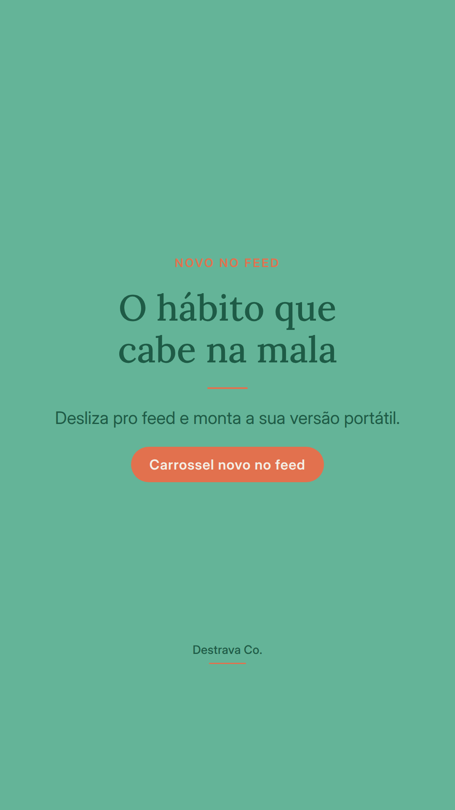
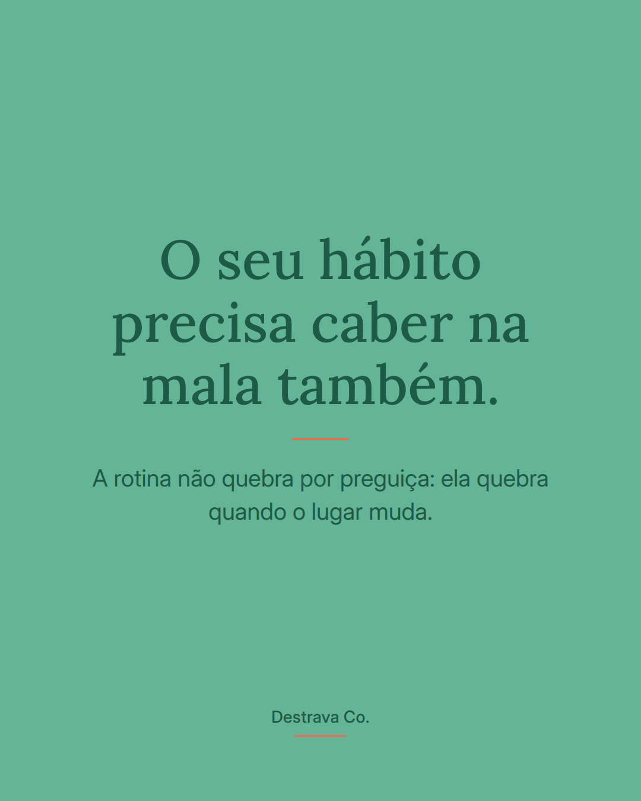
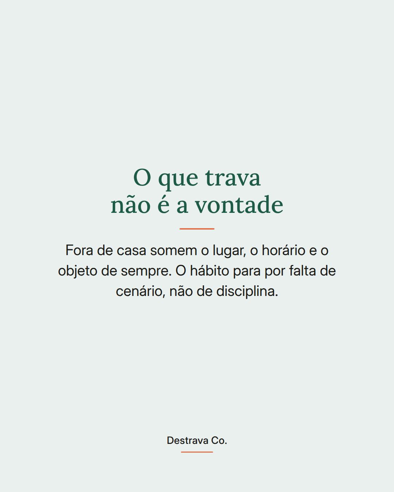
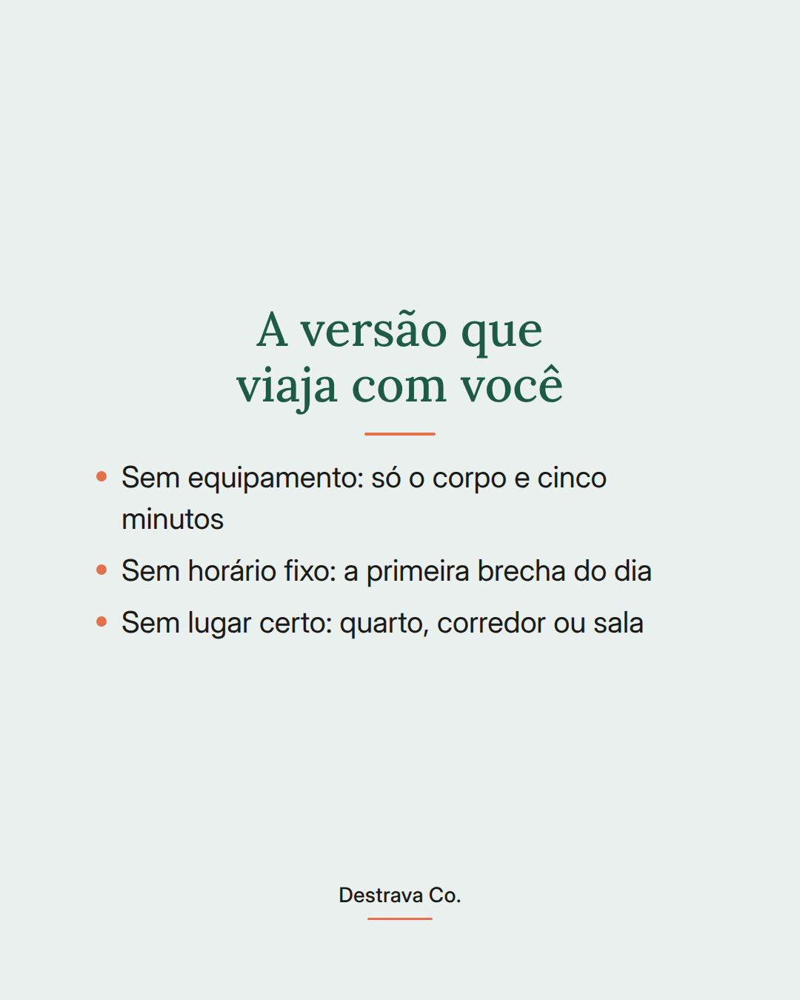
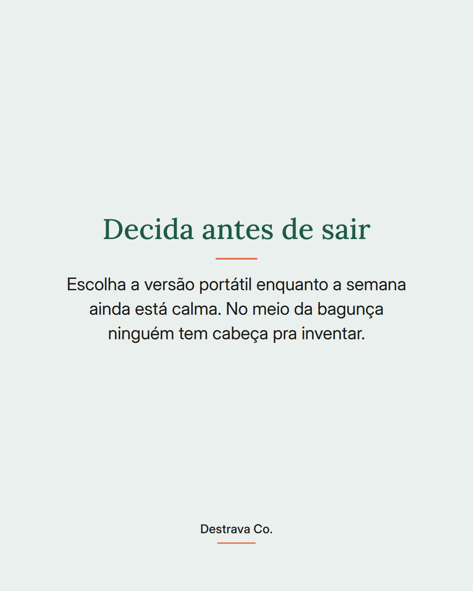
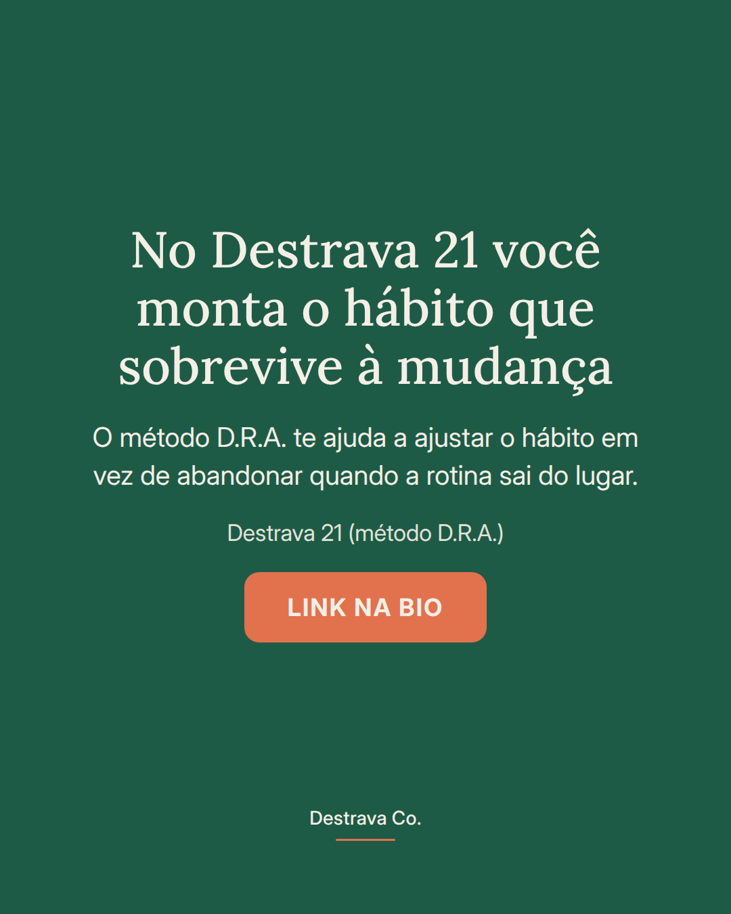

A rotina não quebra por preguiça: ela quebra quando o lugar muda.
Viagem, feriado, casa da sua mãe, criança em casa o dia inteiro. O cenário sai do lugar e o hábito vai junto, porque ele estava preso ao lugar, ao horário e ao objeto de sempre.
A saída não é mais força de vontade. É combinar antes uma versão portátil do seu hábito: sem equipamento, sem horário fixo, sem lugar certo. Cinco minutos já contam como presença.
Decidir isso enquanto a semana ainda está calma economiza a cabeça que você não vai ter no meio da bagunça.
Salva pra lembrar antes da próxima mudança de rotina e compartilha com quem sempre recomeça do zero depois do feriado. Se quiser um caminho pronto, o Destrava 21 te mostra como ajustar sem abandonar.